전자기사 (2003-08-31 기출문제)
1과목: 전기자기학
1. 공기 중에 반지름 r[m]의 매우 긴 평행 왕복도체가 d[m]의 간격으로 놓여있을 때 단위 길이당의 정전용량은 몇 F/m인가? (단, r≪d 이다.)
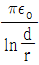
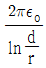
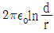
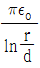
(정답률: 알수없음)

2. 다음중 stock's 정리는?
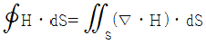
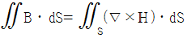
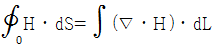
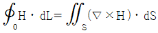
(정답률: 알수없음)
3. 내부장치 또는 공간을 물질로 포위시켜 외부자계의 영향을 차폐시키는 방식을 자기차폐라 한다. 자기차폐에 좋은 물질은?
- 강자성체 중에서 비투자율이 큰 물질
- 강자성체 중에서 비투자율이 작은 물질
- 비투자율이 1 보다 작은 역자성체
- 비투자율에 관계없이 물질의 두께에만 관계되므로 되도록이면 두꺼운 물질
(정답률: 알수없음)
4. 그림 1과 같은 비투자율 1000, 평균길이 ℓ 인 균일한 단면을 갖는 환상철심에 N회의 코일을 감아 I[A]의 전류를 흘렸을 때 철심내를 통하는 자속이 ø[Wb] 이었다. 이 철심에 그림 2와 같이 간격 ℓ/1000 인 공극을 만들었을 때, 동일 전류로 같은 자속을 얻자면 코일의 권수를 얼마로 하면 되는가?
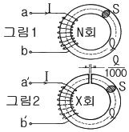
- N회
- 1.2N회
- 1.5N회
- 2N회
(정답률: 알수없음)
5. 유전률이 ε1, ε2 인 유전체 경계면에 수직으로 전계가 작용할 때 단위면적당에 작용하는 수직력은?
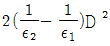
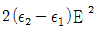
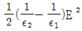
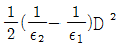
(정답률: 알수없음)
6. 그림과 같은 1m당 권선수 n, 반지름 a[m]의 무한장 솔레노이드에서 자기인덕턴스는 n과 a사이에 어떤 관계가 있는가?
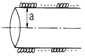
- a와는 상관없고 n2 에 비례한다.
- a와 n의 곱에 비례한다.
- a2 과 n2 의 곱에 비례한다.
- a2 에 반비례하고 n2 에 비례한다.
(정답률: 알수없음)
7. 10㎜의 지름을 가진 동선에 50A의 전류가 흐를 때 단위시간에 동선의 단면을 통과하는 전자의 수는 약 몇 개인가?
- 7.85×1016
- 20.45×1015
- 31.25×1019
- 50×1019
(정답률: 알수없음)
8. 자유공간 중에 x = 2, z = 4인 무한장 직선상에 ρL[C/m]인 균일한 선전하가 있다. 점(0,0,4)의 전계 E 는?
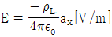
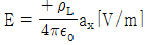
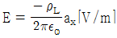
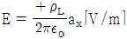
(정답률: 알수없음)
9. 반지름 a[m]의 접지 구도체 중심에서 d[m](d＞a) 떨어진 점에 점전하 Q[C]이 있을 때 점전하와 접지 구도체사이에 작용하는 힘의 크기는 몇 N 인가?
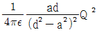
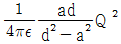
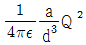
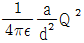
(정답률: 알수없음)
10. 다음 설명 중 옳지 않은 것은?
- 유전체의 전속밀도는 도체에 준 진전하 밀도와 같다.
- 유전체의 전속밀도는 유전체의 분극전하 밀도와 같다.
- 유전체의 분극선의 방향은 -분극전하에서 +분극전하로 향하는 방향이다.
- 유전체의 분극도는 분극전하 밀도와 같다.
(정답률: 알수없음)
11. ohm의 법칙을 미분형으로 표시하면?
- i = E/ρ
- i = ρE
- i = ▽E
- i = div E
(정답률: 알수없음)
12. 강자성체의 자속밀도 B 의 크기와 자화의 세기 J 의 크기 사이에는 어떤 관계가 있는가?
- J 는 B 와 같다.
- J 는 B 보다 약간 작다.
- J 는 B 보다 약간 크다.
- J 는 B 보다 대단히 크다.
(정답률: 알수없음)
13. 평등전계 E[V/m]인 절연유(비유전률 5) 중에 있는 구형기포 중의 전계의 세기는 몇 V/m 인가?
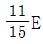
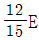
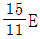
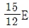
(정답률: 알수없음)
14. 반지름이 1㎜이고, 3μC의 전하를 가진 도체구를 비유전률 5인 기름에서 공기 중으로 꺼내는데 필요한 에너지는 몇 J인가?
- 7.2
- 14.4
- 28.8
- 32.4
(정답률: 알수없음)
15. TEM(횡전자파)은?
- 진행방향의 E , H 성분이 모두 존재한다.
- 진행방향의 E , H 성분이 모두 존재하지 않는다.
- 진행방향의 E 성분만 존재하고 H 성분은 존재하지 않는다.
- 진행방향의 H 성분만 존재하고 E 성분은 존재하지 않는다.
(정답률: 알수없음)
16. 길이 ℓ[m]인 동축 원통도체의 내외원통에 각각 +λ, -λ [C/m]의 전하가 분포되어 있다. 내외 원통사이에 유전률 ε인 유전체가 채워져 있을 때, 전계의 세기는 몇 V/m인가? (단, a, b는 내외 원통의 반지름이고 원통 중심에서의 거리 r은 a＜r＜b인 경우이다.)
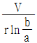
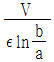
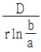
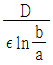
(정답률: 알수없음)
17. 반지름 a[m]인 원에 내접하는 정 n 변형의 회로에 I[A]가 흐를 때, 그 중심에서의 자계의 세기는 몇 AT/m 인가?
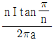
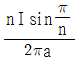
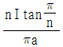
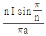
(정답률: 알수없음)
18. 30V/m의 전계내의 60V 되는 점에서 1μC의 전하를 전계방향으로 70cm 이동한 경우, 그 점의 전위는 몇 V 인가?
- 9
- 21
- 39
- 51
(정답률: 알수없음)
19. 자화율(magnetic susceptibility) x는 상자성체에서 일반적으로 어떤 값을 갖는가?
- x = 0
- x ＞0
- x＜ 0
- x = 1
(정답률: 알수없음)
20. 균일하게 원형단면을 흐르는 전류 I[A]에 의한, 반지름 a[m], 길이 ℓ [m], 비투자율 μr인 원통도체의 내부 인덕턴스는 몇 H 인가?
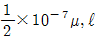
- 10-7, μ, ℓ
- 2×10-7, μ, ℓ
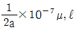
(정답률: 알수없음)
2과목: 회로이론
21. 지수함수 e-αt의 라플라스 변환은?
- 1/S-α
- 1/S+α
- S+α
- S-α
(정답률: 알수없음)
22. 단자 회로에 인가되는 전압과 유입되는 전류의 크기만을 생각하는 겉보기 전력은?
- 유효전력
- 무효전력
- 평균전력
- 피상전력
(정답률: 알수없음)
23. 다음 4단자 회로망에서의 Y-Parameter Y11, Y21는?
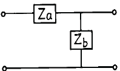
- Y11= 1/Za, Y21= 1/Zb
- Y11= 1/Zb, Y21= 1/Za
- Y11= 1/Za, Y21=- 1/Za
- Y11= 1/Zb, Y21=- 1/Zb
(정답률: 알수없음)
24. RC 고역필터에 폭이 T인 단일 구형파를 입력했을 때 출력파는 어느 것이 가장 가까운가? (단, 시정수 τ ≪ T)
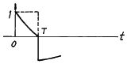
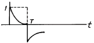
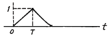
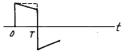
(정답률: 알수없음)
25. RL 직렬 회로에 t = 0일 때,직류 전압 100[V]를 인가하면 흐르는 전류 i(t)는? (단, R = 50[Ω], L = 10[H]이다.)
- 2(1-e5t)
- 2(1-e-5t)
- 1.96(1-et/5 )
- 1.96(1+e-t/5)
(정답률: 알수없음)
26. 다음 변압기 결선에서 제3고조파를 발생하는 것은?
- △-Y
- Y-△
- △-△
- Y-Y
(정답률: 알수없음)
27. 그림과 같은 회로에서 저항 10[Ω]의 지로를 흐르는 전류는?
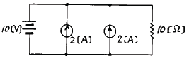
- 1 [A]
- 2 [A]
- 4 [A]
- 5 [A]
(정답률: 알수없음)
28. 전송손실의 단위 1[neper]는 몇 데시벨(㏈) 인가?
- 1.414
- 1.732
- 5.677
- 8.686
(정답률: 알수없음)
29. 그림과 같은 회로에서 L1 = 3[H], L2 = 5[H], M = 2[H]일 때 a, b 간의 인덕턴스는?
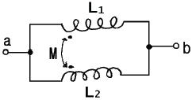
- 1.65[H]
- 2.25[H]
- 2.75[H]
- 3.75[H]
(정답률: 알수없음)
30. 구동점 임피던스(driving-point impedance)함수에 있어서 극(pole)은?
- 아무런 상태도 아니다.
- 개방회로 상태를 의미한다.
- 단락회로 상태를 의미한다.
- 전류가 많이 흐르는 상태를 의미한다.
(정답률: 알수없음)
31. 다음 회로에서 Norton의 정리를 이용해서 콘덴서에 걸리는 전압을 구하면?
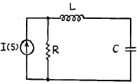
- V(S) = I(S)/(SL+R)SC+1
- V(S) = I(S)R/(SL+R)SC+1
- V(S) = I(S)/(SL+R)+1
- V(S) = I(S)R/(SL+R)SC
(정답률: 알수없음)
32. 그림과 같은 유도결합회로에서 단자 ab간의 합성 임피던스가 실수가 되기 위한 주파수 ω 의 값은?
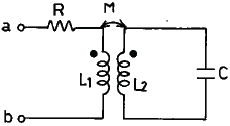
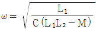
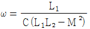
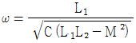
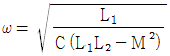
(정답률: 알수없음)
33. 파형률에 관한 설명 중 옳지 않은 것은?
- 실효값을 평균값으로 나눈 값이다.
- 클 수록 정류를 했을 때 효율이 좋아진다.
- 어떠한 파형에 대하여도 그 값은 1 이상이다.
- 동일한 파형에 대하여는 주파수에 관계없이 일정하다.
(정답률: 알수없음)
34. 그림과 같은 저항회로에서 합성저항이 Rab = 12[Ω]일 때 병렬 저항 Rx의 값은 몇 [Ω]인가?
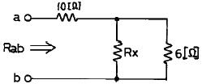
- 3
- 4
- 5
- 6
(정답률: 알수없음)
35. 그림의 회로에서 릴레이의 동작 전류는 10[mA], 코일의 저항은 1[kΩ ], 인덕턴스는 L[H]이다. S가 닫히고 18[ms] 이내로 이 릴레이가 작동하려면 L[H]은 약 얼마인가?
- 26
- 30
- 50
- 68
(정답률: 알수없음)
36. 다음과 같은 회로에서 t = 0에서 스위치 K가 닫혔다. 전류의 파형이 오실로스코프에 나타났을 때 전류의 초기값이 10[mA]로 측정되었다. i(t)의 식은?
- i(t) = 102e-10t
- i(t) = 10-1e20t
- i(t) = 10-2e-20t
- i(t) = 10e10t
(정답률: 알수없음)
37. 회로망에서 ①전압원 ②전류원 ③마디 ④인덕터 ⑤루프 ⑥캐패시터에 대한 쌍대가 되는 형태는?
- ① - ③, ② - ⑤, ④ - ⑥
- ① - ②, ③ - ⑥, ④ - ⑤
- ① - ②, ③ - ⑤, ④ - ⑥
- ① - ③, ④ - ⑤, ② - ⑥
(정답률: 알수없음)
38. 2개 이상의 전원을 내포한 선형 회로에서 어떤 가지에 흐르는 전류나 단자의 전압에 대해 해석하는데 사용하는 것은?
- Norton의 정리
- Thevenin의 정리
- 치환정리
- 중첩의 원리
(정답률: 알수없음)
39. 다음 그림과 같은 그래프의 나무(Tree) 수는?
- 4
- 6
- 16
- 32
(정답률: 알수없음)
40. 2단자 임피던스가 일 때 극점(pole)은?
- -3
- 0
- -1, -2, -3
- -1, -2
(정답률: 알수없음)
3과목: 전자회로
41. 다음과 같은 빈 브리지(Wine Bridge)형 발진 회로의 발진 주파수는?
(정답률: 알수없음)
42. 그림의 회로는?
- 반가산기
- 전가산기
- 반감산기
- 디코더
(정답률: 알수없음)
43. 그림에서 점유율(duty cycle)를 나타내는 식은?
- τ/B
- E/B
- τ/T
- E/T
(정답률: 알수없음)
44. 이상적인 연산 증폭기의 특성 중 옳지 않은 것은?
- 입력 임피던스(Ri) = 0
- 대역폭(BW) = ∞
- 출력 임피던스(R0) = 0
- 전압이득 │Av│ = ∞
(정답률: 알수없음)
45. 주어진 회로는 어떤 종류의 발진기인가?
- colpitts 발진기
- hartley 발진기
- wien bridge 발진기
- phase-shift 발진기
(정답률: 알수없음)
46. 그림과 같은 콜피츠(Colpitts) 발진기의 발진주파수는?
- ≒ 850 ㎑
- ≒ 200 ㎑
- ≒ 2⑤.5 ㎑
- ≒ 2⑤5 ㎑
(정답률: 알수없음)
47. 아래 연산증폭기 응용회로의 기능은?
- 적분기
- 미분기
- 가산기
- 감산기
(정답률: 알수없음)
48. 그림과 같은 회로에서 컬렉터 전류 Ic를 구하면? (단, β = 100 이고 실리콘 트랜지스터이며 VBE = 0.7[V]임)
- 0.2 [㎃]
- 0.5 [㎃]
- 5 [㎃]
- 20 [㎃]
(정답률: 알수없음)
49. 그림에서 A는 연산 증폭기이다. Vi - Vo의 관계는?
(정답률: 알수없음)
50. 십진수 13을 Excess-3 code로 변환하면?
- 0110 1001
- 1010 0101
- 0100 0110
- 0100 0010
(정답률: 알수없음)
51. 위상 변조(PM) 방식에서 변조 지수는?
- 신호파의 진폭에 비례한다.
- 신호파의 주파수에 비례한다.
- 신호파의 진폭에 반비례한다.
- 신호파의 주파수에 반비례한다.
(정답률: 알수없음)
52. B급 TR 푸시풀 전력 증폭기의 최대 출력은?
- Vcc2/RL
- Vcc2/2RL
- 2Vcc2/RL
- Vcc2/4RL
(정답률: 알수없음)
53. 부궤환(negative feedback) 회로의 장점이 아닌 것은?
- 내부 잡음 일부가 경감된다.
- 비직선 일그러짐이 감소된다.
- 입ㆍ출력 임피던스를 변화시킬 수 있다.
- 이득이 높아지고, 주파수 특성이 평탄해진다.
(정답률: 알수없음)
54. 그림과 같은 쌍안정 멀티바이브레이터에서 Q1 → OFF, Q2 → ON 상태라고 할 때 C1과 C2 에 충전된 전압의 크기는 얼마인가?
- │VC1│ = │VC2│
- │VC1│ = │VC2│ = VCC
- │VC1│ ＞ │VC2│
- │VC1│ ＜ │VC2│
(정답률: 알수없음)
55. 다음 회로에서 Re의 중요한 역할은?
- 출력증대
- 주파수 대역증대
- 바이어스 전압감소
- 동작점의 안정화
(정답률: 알수없음)
56. 이미터 접지 증폭기에서 α = 0.98, ICO = 0.1[㎃]이고, IB = 0.2[㎃] 일 때 컬렉터 전류는 몇 [㎃]인가?
- 12.5
- 14
- 14.8
- 24.8
(정답률: 알수없음)
57. 트랜지스터의 고주파 특성으로 α차단 주파수(fα)는 무엇으로 결정되는가?
- 컬렉터에 인가하는 전압에 비례한다.
- 베이스 폭과 켈렉터 용량에 각각 반비례한다
- 베이스 폭의 자승에 반비례하고, 컬렉터 확산 계수에 비례한다.
- 이미터에 인가하는 전압에 비례하고, 컬렉터 용량에 반비례한다.
(정답률: 알수없음)
58. 그림과 같은 논리회로의 출력은? (단, A,B,C,D는 입력 단자이고, VO는 출력이다.)
- AB+CD
- A+B+C+D
- ABCD
- (A+B)(C+D)
(정답률: 알수없음)
59. 커패시터로 필터를 구성한 전파 정류기에서 부하 저항이 감소하면 리플(ripple) 전압은?
- 감소한다.
- 증가한다.
- 관계없다.
- 주파수가 변화한다.
(정답률: 알수없음)
60. FET가 보통의 접합 트랜지스터에 대해 갖는 장점이 아닌것은?
- 입력 임피던스가 크다.
- 진공관이나 트랜지스터에 비하여 잡음이 적다.
- 이득×대역폭이 커서 고주파에서도 사용 가능하다.
- 오프셋 전압이 없으므로 좋은 초퍼로서 사용할 수 있다.
(정답률: 알수없음)
4과목: 물리전자공학
61. 주양자수 n이 3인 전자각 M에 들어갈 수 있는 최대 전자수는?
- 2
- 8
- 18
- 32
(정답률: 알수없음)
62. 낮은 전압에서는 큰 저항을 나타내며, 높은 전압에서는 작은 저항값을 갖는 소자는?
- 바랙터(Varractor)
- 바리스터(Varistor)
- 세미스터(semistor)
- 서미스터(thermistor)
(정답률: 알수없음)
63. Fermi-Dirac 분포 함수는?
- f(E) = 1/1-e(E-EF)/kT
- f(E) = 1/1+e(E-EF)/kT
- f(E) = 1-e(E-EF)/kT
- f(E) = 1+e(E-EF)/kT
(정답률: 알수없음)
64. JFET의 핀치오프 전압에 대한 설명으로 옳지 않은 것은?
- 채널의 폭에 비례한다.
- 재료의 비유전율에 반비례한다.
- 채널 부분의 도우핑 밀도에 비례한다.
- 드레인 소스간을 개방한 경우는 공간 전하층으로 채널이 막혔을 때의 게이트 역전압이다.
(정답률: 알수없음)
65. 절대온도 0[°K]에서 진성 반도체의 모든 가전자는?
- 전도대에 존재한다.
- 금지대에 존재한다.
- 가전자대에 존재한다.
- 전도대와 가전자대에 존재한다.
(정답률: 알수없음)
66. 일 함수(work function)의 설명 중 옳지 않은 것은?
- 금속의 종류에 따라 값이 다르다.
- 일 함수가 큰 것이 전자 방출이 쉽게 일어난다.
- 표면장벽 에너지와 Fermi 준위와의 차를 일 함수라 한다.
- 전자가 방출되기 위해서 최소한 이 일 함수에 해당되는 에너지를 공급받아야 한다.
(정답률: 알수없음)
67. 반도체에 전장을 가하면 전자는 어떤 운동을 하는가?
- 원 운동
- 불규칙 운동
- 포물선 운동
- 타원 운동
(정답률: 알수없음)
68. 전계의 세기 E = 105[V/m]의 평등 전계 중에 놓인 전자에 가해지는 전자의 가속도는 약 얼마인가?
- 1600[m/s2]
- 1.602× 10-14[m/s2]
- 5.93× 105 [m/s2]
- 1.75× 1016[m/s2]
(정답률: 알수없음)
69. 부성(負性) 저항의 특성이 가장 현저하게 나타나는 것은?
- 광 다이오드
- 터널 다이오드
- 제너 다이오드
- 쇼트키 다이오드
(정답률: 알수없음)
70. 실리콘이 정제하기 어려운 이유는?
- 에너지 밴드캡이 크다.
- 단결정 형성이 안된다.
- 표면 장력이 크다.
- 녹는 온도가 높다.
(정답률: 알수없음)
71. 기압 1[mmHg] 정도의 글로우 방전(glow discharge)에서 생기는 관내 발광 부분이 아닌 것은?
- 양광주(positive column)
- 부 글로우(negative glow)
- 음극 글로우(cathode glow)
- 패러데이 암부(faraday dark space)
(정답률: 알수없음)
72. 진성 반도체에서 온도가 상승하면 페르미 준위는?
- 전도대 쪽으로 접근한다.
- 가전자대 쪽으로 접근한다.
- 도우너 준위에 접근한다.
- 금지대 중앙에 위치한다.
(정답률: 알수없음)
73. 진성반도체 Si의 300[K]에서의 저항율을 636[Ωㆍm],전자 및 정공의 이동도를 각각 0.15[m2/Vㆍsec], 0.⑤[m2/Vㆍsec] 이라고 하면 그때의 전자 밀도는 약 얼마인가?
- 9.8×1010개/m3
- 9.8×1012개/m3
- 4.9×1013개/m3
- 4.9×1016개/m3
(정답률: 알수없음)
74. 접합 트랜지스터에서 주입된 과잉 소수 캐리어는 베이스 영역을 어떤 방법에 의해서 흐르는가?
- 확산에 의해서
- 드리프트에 의해서
- 컬렉터 접합에 가한 바이어스 전압에 의해서
- 이미터 접합에 가한 바이어스 전압에 의해서
(정답률: 알수없음)
75. 물질의 구성과 관계없는 요소는?
- 광자
- 중성자
- 양자
- 전자
(정답률: 알수없음)
76. 컬렉터 접합부의 온도 상승으로 트랜지스터가 파괴되는 현상은?
- Saturation 현상
- break down 현상
- thermal runaway 현상
- pinch off 현상
(정답률: 알수없음)
77. 두 도체 또는 반도체의 폐회로에서 두 접합점의 온도차로서 전류가 생기는 현상은?
- 홀(Hall) 효과
- 광전(Photo) 효과
- 지벡(Seebeck) 효과
- 펠티어(Peltier) 효과
(정답률: 알수없음)
78. 균일 자계 B에 자계와 직각 방향으로 속도 V를 갖고 입사한 전자의 각속도는? (단, 전자의 질량을 m, 전하량은 q)
- mV/qB
- qB/m
- 2πm/qB
- qB/2πm
(정답률: 알수없음)
79. 전자 방출에 관한 설명 중 옳지 않은 것은?
- 금속을 고온으로 가열하면 자유전자의 일부가 금속 외부로 방출되는 현상을 열전자 방출이라 한다.
- 금속의 표면에 빛을 입사시키면 전자가 방출되는 현상을 광전자 방출이라 한다.
- 금속의 표면에 강한 전계를 가하면 전자가 방출되는 현상을 2차 전자 방출이라 한다.
- 금속의 표면에 전계를 가하면 금속 표면의 열전자 방출량 보다 전자 방출이 증가하는 현상을 Shottky 효과라 한다.
(정답률: 알수없음)
80. 터널 다이오드(Tunnel Diode)에서 터넬링(Tunnelling)은 언제 발생하는가?
- 역방향에서만 발생
- 정전압이 높을 때만 발생
- 바이어스가 영 일때 발생
- 아주 낮은 전압에 있는 정방향에서 발생
(정답률: 알수없음)
5과목: 전자계산기일반
81. 흐름도(flowchart)에서 기호는?
- 프로세스(process)
- 판단(decision)
- 시작, 끝(terminal)
- 반복(repeat)
(정답률: 알수없음)
82. DMA(Direct Memory Access) 장치의 역할은?
- CPU 대신 메모리에 연결된 버스의 사용권을 허가하는 역할을 한다.
- CPU로 옮길 데이터를 메모리에서 찾아 전송하는 역할을 한다.
- 메모리와 입ㆍ출력장치 간에 대량의 자료를 전송하는 역할을 한다.
- CPU에서 입ㆍ출력장치로 데이터를 전송하는 역할을 한다.
(정답률: 알수없음)
83. 수행 시간이 길어 특수 목적의 기계 이외에는 별로 사용하지 않는 명령 형식이지만 연산 후 입력 자료가 변환되지 않고 보존되는 장점을 가진 명령 형식은?
- 3-주소명령형식
- 2-주소명령형식
- 1-주소명령형식
- 0-주소명령형식
(정답률: 알수없음)
84. 마이크로컴퓨터 내에서 각 장치 간의 정보 교환을 위해 필요한 물리적 연결을 무엇이라 하는가?
- I/O processor
- control line
- bus
- register
(정답률: 알수없음)
85. 컴퓨터나 주변장치 사이에 데이터 전송을 수행할 때 I/O 준비나 완료 상태를 나타내는 신호가 필요한 비동기식 입ㆍ출력 시스템에 널리 쓰이는 방식은?
- Polling
- Interrupt
- Paging
- Handshaking
(정답률: 알수없음)
86. 제어 신호를 발생하는 제어 데이터가 아닌 것은?
- 중앙처리장치의 제어점을 제어하는 데이터
- 메이저 상태간의 변천을 제어하는 데이터
- 인스트럭션의 순서를 제어하는 데이터
- 주변장치를 제어하는 데이터
(정답률: 알수없음)
87. 스택(stack)에 대한 설명 중 옳은 것은?
- 가장 나중에 저장한 자료를 가장 먼저 내보낸다.
- 가장 먼저 저장한 자료를 가장 먼저 내보낸다.
- 저장한 순서에 관계없이 주소를 주면 자료를 읽을 수 있다.
- 스택포인터(또는 스택의 top)는 가장 먼저 저장된 자료의 위치를 표시한다.
(정답률: 알수없음)
88. 그림과 같은 논리게이트 회로는 어떤 동작을 나타내고 있는가?
- A와 B입력에 대한 일치동작
- A ＞ B 판정 검출동작
- A ＜ B 판정 검출동작
- A와 B입력의 NAND 논리동작
(정답률: 알수없음)
89. 다음 주소지정 방식 중에서 반드시 누산기를 필요로 하는 방식은?
- 3-주소지정 방식
- 2-주소지정 방식
- 1-주소지정 방식
- 0-주소지정 방식
(정답률: 알수없음)
90. 10진수 4와 10진수 13에 해당하는 그레이 코드(gray code)를 비트 단위(bitwise) OR 연산을 하면 결과는?
- 0110
- 1011
- 0010
- 1111
(정답률: 알수없음)
91. A, B가 각각 합하는 수의 비트이고 Co가 낮은 자리에서의 올림수 비트일 때 전가산기의 합(S)에 대한 불 함수로 옳지 않은 것은?
- S=(A ⊕ B) ⊕ Co
(정답률: 알수없음)
92. 휘발성(volatile)과 가장 밀접한 관계를 갖는 메모리는?
- RAM
- ROM
- PROM
- EPROM
(정답률: 알수없음)
93. 인터럽트 처리 과정 중 인터럽트 장치를 소프트웨어에 의하여 판별하는 방법은?
- 스택
- 벡터 인터럽트
- 폴링
- 핸드쉐이킹
(정답률: 알수없음)
94. 논리 연산 중 마스크 동작은 어느 동작과 같은가?
- OR
- AND
- EX-OR
- NOT
(정답률: 알수없음)
95. 16비트로 나타낼 수 있는 정수의 범위는?
- -216 ~ 216
- -216-1 ~ 216+1
- -215 ~ 215
- -215 ~ 215-1
(정답률: 알수없음)
96. 부호화된 데이터를 해독하여 정보를 찾아내는 조합논리 회로는?
- 인코더
- 디코더
- 디멀티플렉서
- 멀티플렉서
(정답률: 알수없음)
97. 인스트럭션 수행을 위한 마이크로 오퍼레이션 중 우선적으로 이루어져야 하는 것은?
- MBR ← PC
- MAR ← PC
- PC ← PC+1
- IR ← MBR
(정답률: 알수없음)
98. interrupt 중에서 operator에 의하여 발생되는 것은?
- I/O interrupt
- program interrupt
- external interrupt
- supervisor call interrupt
(정답률: 알수없음)
99. 다음 명령은 명령 형식 중 어디에 속하는가?
- 3번지 명령
- 2번지 명령
- 1번지 명령
- 0번지 명령
(정답률: 알수없음)
100. 운영체제를 설명한 것이 아닌 것은?
- 사용자와 하드웨어간의 중간 대화 통로
- 컴퓨터 시스템 장치를 효율적으로 관리
- 컴퓨터를 사용자가 편리하게 이용 가능
- 업무에 사용하도록 개발한 응용프로그램
(정답률: 알수없음)